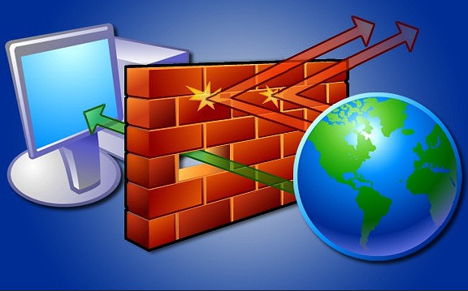
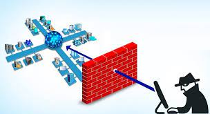
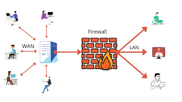

یکی از سوال های رایج در شبکه این است که فایروال چیست ؟

وقتی که ما در مورد اینترنت گفتوگو میکنیم اولین سوالی که پیش می اید بحث امنیت است
اینترنت و امنیت دو مقوله جدا نشدنی از هم هستند که هرکس در اینترنت در حال انجام
کاری است به مانند کسب کار اینترنتی یا بالعکس خرید از کسب کار های اینترنتی
و یا هر کار دیگیری باید به امنیت کار خود در بستر اینترنت اهمیت بسیار زیادی داد
فایروال یا ترجمه فارسی ان دیوار اتش به نرم افزاری یا سخت افزاری گفته میشود
که از دسترسی باز کامپیوتر ها جلوگیری کرده تا برنامه یا هرچیز دیگری که
حامل الودگی هستند نتوانند به کامپیوتر شما نفوذ پیدا کنند تا بتوانند
به سیستم و اطلاعات مهم شما صدمه یا انهارا کنترل کنند

همچنین فایروال ترافیک رد بدل شده در شبکه نیز کنترل میکند و از دسترسی ها
غیر مجاز به شبکه ی خصوصی جلوگیر میکند و یک ستون امنیتی در شبکه است
و کار های دیگری که فایروال برای ما انجام میدهد
بحث داده ها است : فایروال هر داده ای که میخاهند به کامپیوتر ما وار شود
یا از ان خارج شود کنترل میکند که ایا اجازه ای عبور دارد یا باید مسدود شود

خوب حال میخواهم شما دوست عزیز رو با نحوه کنترل بر firewall network protection اشنا کنم
و حال اگر فایروال غیر فعال کنیم چه اتفاقی برای ما ممکن است رخ دهد :
استفاده نکردن از فایروال موجب میشود که هکر ها یا مهاجمین به راحتی
وارد شبکه یا کامپیوتر شما شوند و بدن هیچ محدودیتی
خراب کاری های خود را اعمال کنند
:
و حال در ویدیو پایین خاهید دید که چگونه فایروال را غیر فعال کنیم
بنده شما را با خلاصه مطالب فایروال اشنا کرده ام برای همین کسانی که مایل به این هستنده که فایروال را با جزئیات کامل تر مطالعه کنند میتوانند با مشاهده PDF قرار گرفته در سایت فایروال راتخصصی تر بیاموزید